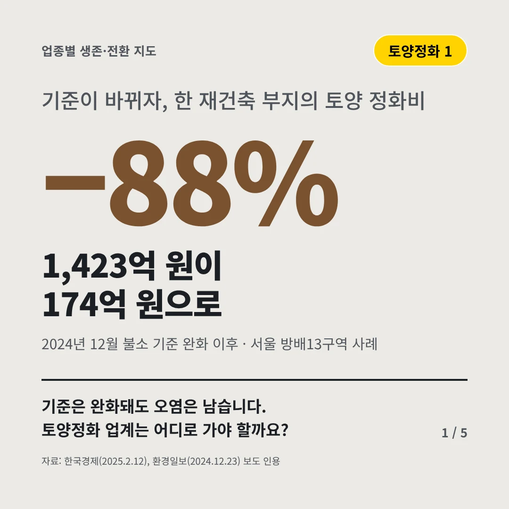
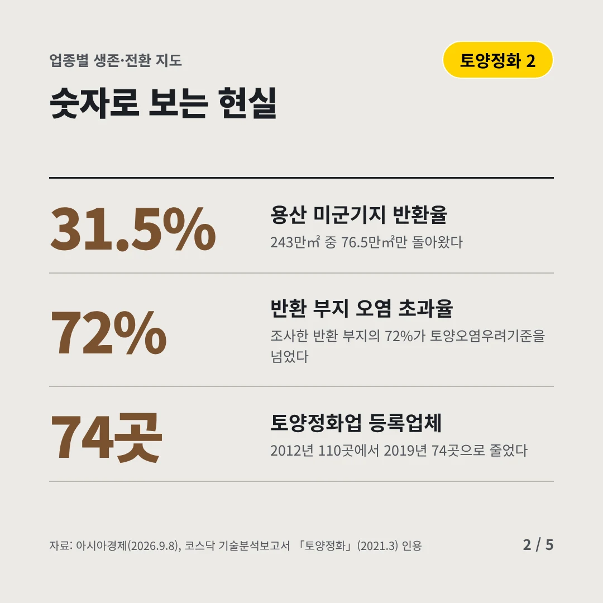
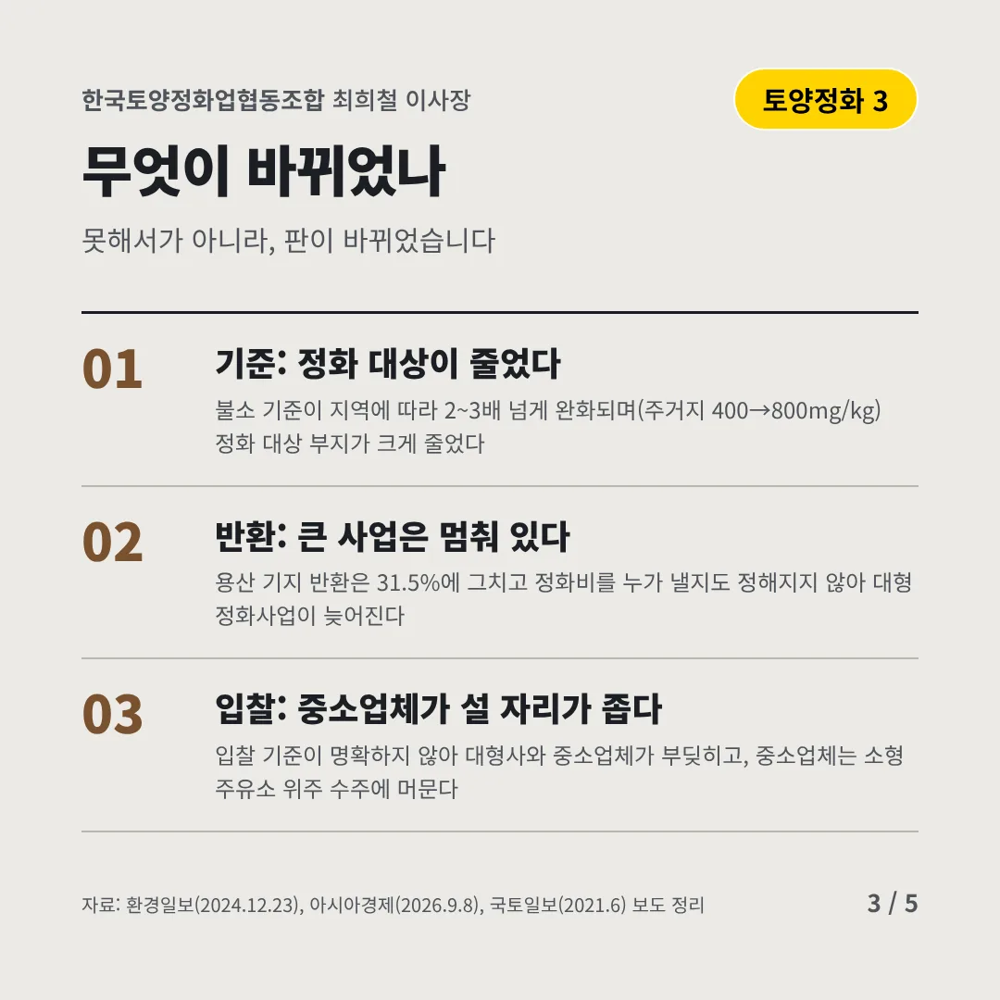
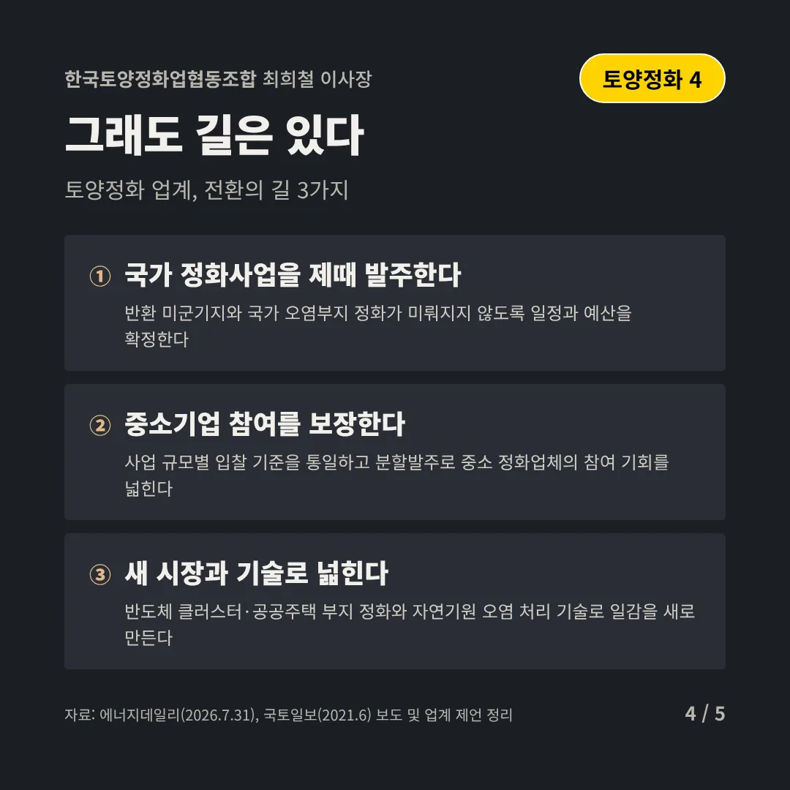
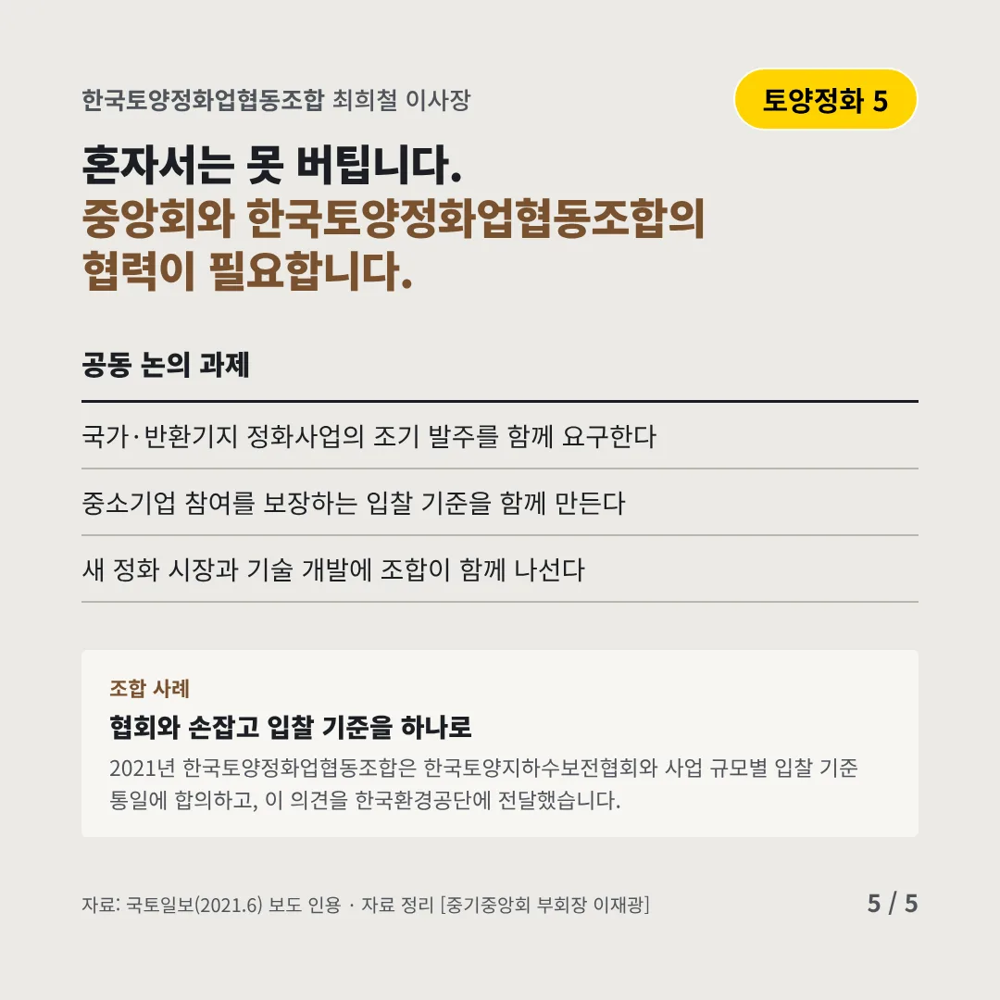
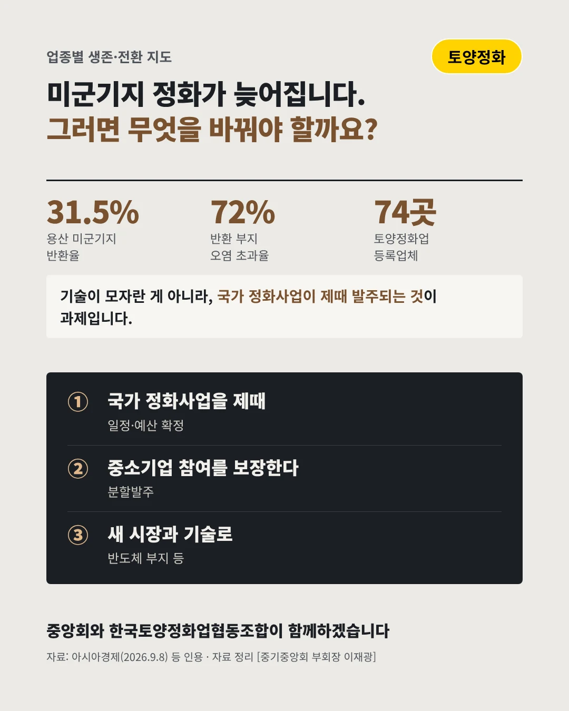

한국토양정화업협동조합
1,423억 원이 174억 원으로
−88% 기준이 바뀌자, 한 재건축 부지의 토양 정화비






기준은 완화돼도 오염은 남습니다. 토양정화 업계는 어디로 가야 할까요?
숫자로 보는 현실
- 31.5%용산 미군기지 반환율243만㎡ 중 76.5만㎡만 돌아왔다
- 72%반환 부지 오염 초과율조사한 반환 부지의 72%가 토양오염우려기준을 넘었다
- 74곳토양정화업 등록업체2012년 110곳에서 2019년 74곳으로 줄었다
무엇이 바뀌었나
- 기준: 정화 대상이 줄었다불소 기준이 지역에 따라 2~3배 넘게 완화되며(주거지 400→800mg/kg) 정화 대상 부지가 크게 줄었다
- 반환: 큰 사업은 멈춰 있다용산 기지 반환은 31.5%에 그치고 정화비를 누가 낼지도 정해지지 않아 대형 정화사업이 늦어진다
- 입찰: 중소업체가 설 자리가 좁다입찰 기준이 명확하지 않아 대형사와 중소업체가 부딪히고, 중소업체는 소형 주유소 위주 수주에 머문다
그래도 길은 있다
- 국가 정화사업을 제때 발주한다반환 미군기지와 국가 오염부지 정화가 미뤄지지 않도록 일정과 예산을 확정한다
- 중소기업 참여를 보장한다사업 규모별 입찰 기준을 통일하고 분할발주로 중소 정화업체의 참여 기회를 넓힌다
- 새 시장과 기술로 넓힌다반도체 클러스터·공공주택 부지 정화와 자연기원 오염 처리 기술로 일감을 새로 만든다
한 장 요약

조합 사례
2021년 한국토양정화업협동조합은 한국토양지하수보전협회와 사업 규모별 입찰 기준 통일에 합의하고, 이 의견을 한국환경공단에 전달했습니다.
자료: 한국경제(2025.2.12), 환경일보(2024.12.23), 아시아경제(2026.9.8), 코스닥 기술분석보고서 「토양정화」(2021.3), 국토일보(2021.6), 에너지데일리(2026.7.31)